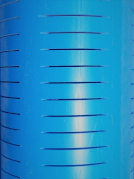

RAINWATER RECHARGE SYSTEM
Harvest Rainwater - The Modern Way
FRP LEAKAGE-FREE RECHARGE PIT
 V-WIRE TECHNOLOGY
GRADED & WASHED FILTER MEDIA
V-WIRE TECHNOLOGY
GRADED & WASHED FILTER MEDIA
 POLYCARBONATE DIFFUSER PLATE
POLYCARBONATE DIFFUSER PLATE
V-WIRE TECHNOLOGY
GRADED & WASHED FILTER MEDIA

TRANSVERSE-SLOTTED CASINGS
POLYCARBONATE DIFFUSER PLATE
- New-Age modular recharge system 7 Easy and quick to install
- Requires very less space
- No deep excavation required if installed underground
- Can also be installed above ground or partially above ground
- Leakage-free system
- SS 304 V-Wire screen with unique inwardly widening horizontal and continuous slot design to improve and sustain recharge process
- Graded & washed silica sand for efficient filtration
- Polycarbonate diffuser plate to prevent short-circuiting of filter media
- Easy, infrequent & low cost maintenance-Can be conveniently done even by user
- In-built inlet connection to reduce on-site plumbing work
- In-built vent pipe connection for air to escape during recharge process
- Can be provided with overflow connection to eject excess water during heavy rains
- Transverse-slotted casing pipes in recharge borewell ensure high recharge rate even in smaller dia. bore
- More premium features available on demand